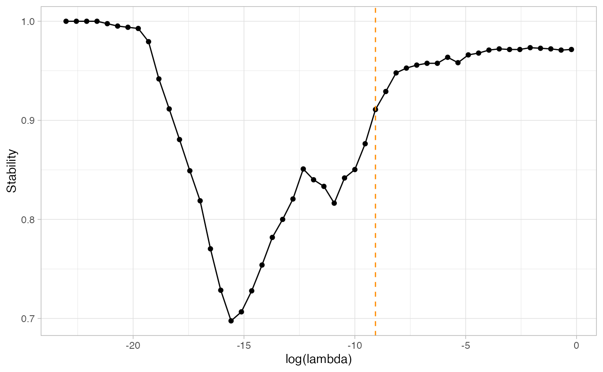
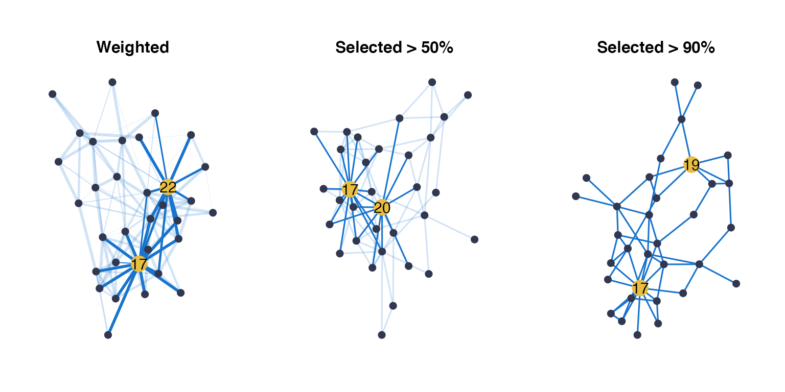
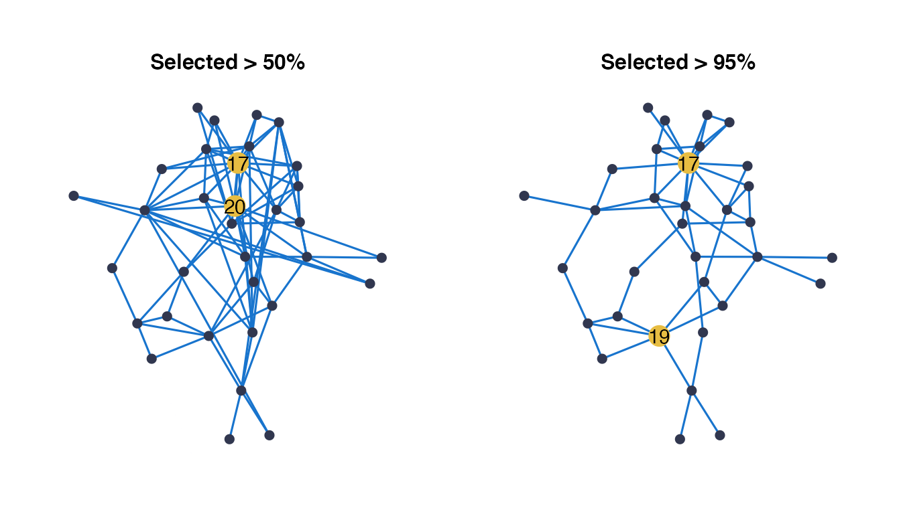

Fatala fishes
Fatala_Net.RmdThis is a basic example detailing how to infer a network, using fishes counts from the Fatala River (Barans95 data from the ade4 package).
Fatala fishes dataset
The data is composed of 33 species abundances measures in 95 samples.
library(ade4) library(tibble) data(baran95) Y = as.matrix(baran95$fau) n = nrow(Y) p = ncol(Y) head(Y[,1:5])
## AMA CAS CHI CHL CJO
## 1 0 2 0 3 0
## 2 0 1 0 0 0
## 3 0 2 0 3 0
## 4 0 0 0 2 0
## 5 0 0 0 0 0
## 6 0 0 0 0 0str(Y)
## int [1:95, 1:33] 0 0 0 0 0 0 0 0 0 0 ...
## - attr(*, "dimnames")=List of 2
## ..$ : chr [1:95] "1" "2" "3" "4" ...
## ..$ : chr [1:33] "AMA" "CAS" "CHI" "CHL" ...The available covariates are the site and date of the samples. At each date and site, 4 samples were measured, except for kilometer 03 of January 93.
## tibble [95 × 2] (S3: tbl_df/tbl/data.frame)
## $ date: Factor w/ 6 levels "apr93","jun93",..: 1 1 1 1 1 1 1 1 1 1 ...
## $ site: Factor w/ 4 levels "km03","km17",..: 1 1 1 1 2 2 2 2 3 3 ...table(X$date, X$site)
##
## km03 km17 km33 km46
## apr93 4 4 4 4
## jun93 3 4 4 4
## aug93 4 4 4 4
## oct93 4 4 4 4
## dec93 4 4 4 4
## feb94 4 4 4 4Network inference
EMtree infers a network from either a correlation matrix of a multivariate Gaussian, or an object created by PLNmodels from count data. Therefore here we first create a PLNmodels object:
##
## Initialization...
## Adjusting a PLN model with full covariance model
## Post-treatments...
## DONE!And then run EMtree:
##
## Likelihoods: -45.40118 , -45.33161 , -45.33147 , -45.33139 ,
##
## Convergence took 0.27 secs and 4 iterations.str(EMtreeFit)
## List of 6
## $ edges_prob : num [1:33, 1:33] 0 0.00703 0.02019 0.14676 0.0321 ...
## $ edges_weight: num [1:33, 1:33] 0 0.000946 0.000946 0.000948 0.000947 ...
## $ logpY : num [1:4] -45.4 -45.3 -45.3 -45.3
## $ maxIter : num 4
## $ norm.cst : num 2.07e-50
## $ timeEM : 'difftime' num 0.267090797424316
## ..- attr(*, "units")= chr "secs"To get a network from afit of EMtree(), the probabilities stored in edges_prob can be thresholded. We propose the \(2/p\) threshold as follows:
probs<- EMtreeFit$edges_prob net<-1*(probs>2/p)
To improve the robstness, the function ResampleEMtree() implements a statibility selection of EMtree on S sub-samples. This function uses parallel computations with mclapply(). The output Pmat gathers all the infered edges probabilities for each sub-sample.
ResampEmtreeFit<-ResampleEMtree(counts=Y, covar_matrix = X$site , S=5, maxIter=10,cond.tol=1e-8, cores=1)
## Computing 5 probability matrices with 1 core(s)... 4.27 secsstr(ResampEmtreeFit)
## List of 3
## $ Pmat : num [1:5, 1:528] 0.00118 0.00288 0.00504 0.01934 0.00641 ...
## $ maxIter: num [1:5] 3 6 3 6 6
## $ times : 'difftime' num [1:5] 0.158908605575562 0.280280828475952 0.157903909683228 0.291329383850098 ...
## ..- attr(*, "units")= chr "secs"Edges selection frequencies can be derived from the Pmatoutput with the function freq_selec(). A final network can then be obtained by thresholding the frequencies, to keep for example edges that are selected in more than \(80\%\) of sub-samples:
freqs<-freq_selec(ResampEmtreeFit$Pmat,Pt=2/p+0.1) resampNet<-1*(freqs>0.8)
Infer networks under several models:
The aim of function ComparEMtree() is to run network inference with different covariates specifications. It uses ResampleEMtree() and adjust the different models specified in model_names as follows:
tested_models=list(1,2,c(1,2)) models_names=c("date","site","date + site") compare_models<-ComparEMtree(Y, X, models=tested_models, m_names=models_names, Pt=2/p+0.1, S=3, maxIter=5,cond.tol=1e-8,cores=1)
## model date : Computing 3 probability matrices with 1 core(s)... 4.23 secs
## model site : Computing 3 probability matrices with 1 core(s)... 2.54 secs
## model date + site : Computing 3 probability matrices with 1 core(s)... 3.95 secsstr(compare_models)
## tibble [1,584 × 4] (S3: tbl_df/tbl/data.frame)
## $ node1 : chr [1:1584] "1" "1" "2" "1" ...
## $ node2 : chr [1:1584] "2" "3" "3" "4" ...
## $ model : chr [1:1584] "date" "date" "date" "date" ...
## $ weight: num [1:1584] 0 0 0 0 0 ...Visuals
Package Emtree provides with plotting functions for network visualizations. They build from the ggraph and 'tidygraph packages.
Simple networks
The function draw_network() takes a weighted matrix an input, and represent a network with edges widths proportional to the input weights. Several layouts are available (see the ggraph documentation). Highlighting of nodes possessing among the highest betweenness centrality measure is done with the parameter btw_rank.
probs[probs<2/p]=0 draw_network(probs,title="Site", pal_edges="dodgerblue3", layout="nicely",btw_rank=3)$G

From the selected edges frequencies:
draw_network(resampNet,"Site", layout="nicely")$G

Facets of several networks
The functioncompare_graphs() draws a facet plot of the output networks from ComparEMtree(). Comparing network by eye is difficult, on particular choosing the right layout to do so is often troublesome. Here by default, the circle layout is used so that differences in density and sensitive nodes are easily seen.
compare_graphs(compare_models,shade=TRUE)$G
However, if another layout is preferred, the nodes position is preserved along the facet and defined by choosing the base_model.
compare_graphs(compare_models,shade=FALSE, layout="nicely", curv=0.1, base_model="site")$G
